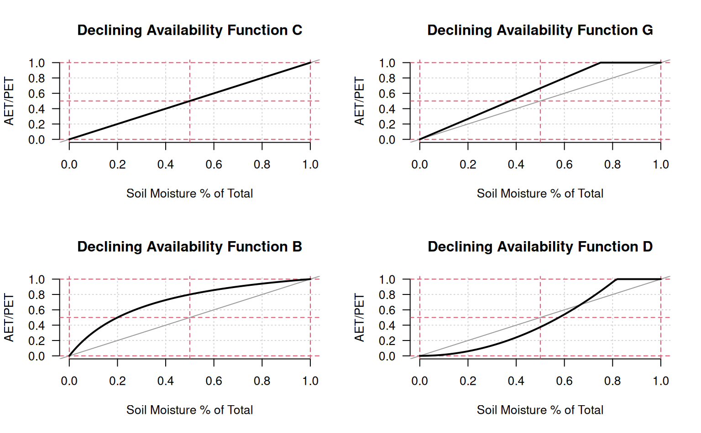

This function is provides a standardized approach for the visualization of "declining availability functions" (DAF) used by various water-balance simulations. The DAF is an approximation of physical constraints on plant water extraction efficiency, as a function of declining soil moisture.
plotDAF(s = c("B", "C", "D", "G"), res = 0.01, ...)
DAF.C(x, intercept = 0)
DAF.G(x, threshold = 0.75)
DAF.B(x)
DAF.D(x)character, selection of declining availability function by name ('B', 'C', 'D', 'G')
numeric, curve resolution typically within the range of 0.01 to 0.1
additional arguments to a DAF (see examples)
ordered sequence of VWC in (0, 1)
y-intercept, use to limit the minimum AET/PET ratio, must be within (0, 1)
soil moisture fraction threshold above which AET/PET is constant. within (0, 1)
nothing, function called for graphical output
AET/PET ratio in (0, 1)
AET/PET ratio in (0, 1)
AET/PET ratio in (0, 1)
AET/PET ratio in (0, 1)
# multi-figure output
op <- par(no.readonly = TRUE)
par(mfrow = c(2, 2))
# defaults
plotDAF('C')
plotDAF('G')
plotDAF('B')
plotDAF('D')

# adjust intercept term for DAF 'C'
plotDAF('C', intercept = 0.1)
title(sub = 'intercept = 0.1', font.sub = 3)
plotDAF('C', intercept = 0.3)
title(sub = 'intercept = 0.3', font.sub = 3)
# adjust threshold term for DAF 'G'
plotDAF('G', threshold = 0.5)
title(sub = 'threshold = 0.5', font.sub = 3)
plotDAF('G', threshold = 0.9)
title(sub = 'threshold = 0.9', font.sub = 3)
# reset output device options
par(op)